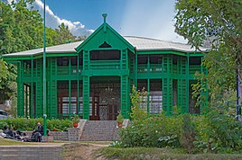

Balochistan (/bəˌlɒtʃɪˈstɑːn, -stæn/; Urdu and Pashto: بلوچستان, Balochi: بلۏچستان) is one of the four provinces of Pakistan. It is the largest province in terms of land area, forming the southwestern region of the country, but is the least populated. Its provincial capital and largest city is Quetta.
Balochistan shares borders with Punjab and the Khyber Pakhtunkhwa to the northeast, Sindh to the east and southeast, the Arabian Sea to the south, Iran (Sistan and Baluchestan) to the west and Afghanistan (Helmand, Nimruz, Kandahar, Paktika and Zabul Provinces) to the north and northwest.
The name "Balochistan" means "the land of the Baloch". Largely underdeveloped, its provincial economy is dominated by natural resources, especially its natural gas fields, estimated to have sufficient capacity to supply Pakistan's demands over the medium to long term.[citation needed] Aside from Quetta, the second-largest city of the province is Turbat in the south, while another area of major economic importance is Gwadar Port on the Arabian Sea.
